Обзор
Редактор лиц (FE) — это инструмент для создания и редактирования файлов ресурсов (кроме файлов моделей, которые создаются где-то еще). Он предоставляет графический интерфейс для создания библиотек выражений и использования этих выражений для создания последовательностей.
Этот инструмент на данный момент не поддерживается, но для тех пользователей, которые все еще его используют, мы сохранили доступную на данный момент информацию. Однако в документацию этого инструмента не будет никаких дополнений.
На изображении ниже показан обзор FE и его подокна:
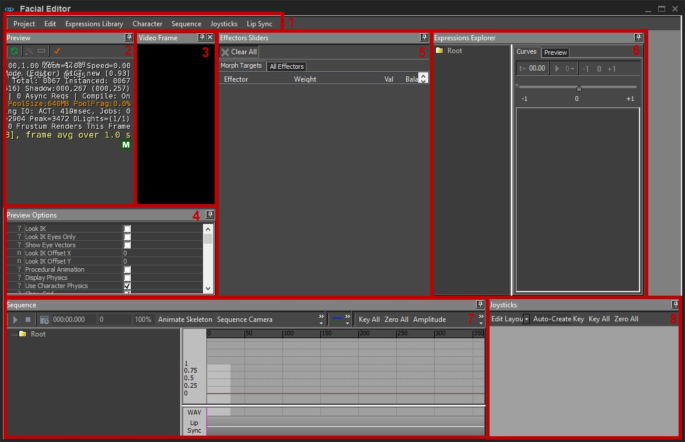
Макет FE настраивается пользователем; Редактор может отображаться по-разному для разных пользователей.
Интерфейс редактора лиц разделен на несколько подокн или панелей, каждая из которых используется для редактирования различных аспектов анимации лица.
Обо всем этом мы поговорим отдельно ниже.
1. Строка меню
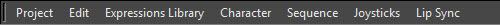
Проект
Предоставленные здесь средства управления проектом в последнее время не обслуживались.
Новый | Создает новый проект. |
Открыть | Открывает проект. |
Сохранить | Сохраняет текущий проект. |
Сохранить как | Сохраняет текущий проект и позволяет указать имя и местоположение. |
Редактировать
Отменить | Отменить последнюю операцию. |
Повторить | Повторить операцию после отмены. |
Библиотека выражений
Новый | Закрывает текущую библиотеку выражений и создает новую. |
Открыть | Закрывает текущую библиотеку выражений и открывает другую. |
Сохранить | Сохраняет библиотеку выражений. |
Сохранить как | Сохраняет библиотеку выражений под другим именем файла. В настоящее время, в отличие от некоторых других приложений, команда «Сохранить как» создаст новый документ, но не переключится на его редактирование. Редактор продолжит отображать предыдущий документ. Это может измениться в будущем. |
Экспортировать выбранные выражения | Создает новую библиотеку выражений, состоящую только из тех выражений, которые в данный момент выбраны на панели Обозреватель выражений. |
Импортировать выражения | Открывает существующую библиотеку выражений и объединяет выражения с текущей. |
Пакетное обновление с выбранными выражениями | Выбирает серию файлов библиотеки выражений и объединяет в них выражения, выбранные в данный момент. При необходимости файлы должны быть извлечены пользователем в Perforce перед выполнением этой операции. |
Проверка Морфа | Отображает список всех морфов, на которые имеются ссылки в библиотеке выражений, которые отсутствуют в загруженном в данный момент персонаже. |
Персонаж
Загрузить | Загрузите нового персонажа для использования в предварительном просмотре. Этот персонаж может представлять собой CHR голову, CDF голову с прикрепленными глазами или полное тело (CDF с прикрепленной головой). |
Последовательность
Новый | Закройте существующую последовательность и создайте новую. |
Открыть | Закройте текущую последовательность и откройте другую. |
Сохранить | Сохранить последовательность. |
Сохранить как | Сохраните последовательность под другим именем файла. В настоящее время, в отличие от некоторых других приложений, «Сохранить как» создаст новый документ, но не переключится на его редактирование. Редактор продолжит отображать предыдущий документ. Это может измениться в будущем. |
Загрузить звук | Загрузите в эпизод совместимый WAV-файл. |
Загрузить анимацию скелета | Загрузите скелетную анимацию (файл .CAF) в текущую последовательность. Доступны только анимации, доступные через файл Cal (Crytek Animation List). |
Пакетное применение выражения | Не поддерживается. |
Экспортировать выбранные выражения | Создайте новый файл последовательности, содержащий только выбранные в данный момент каналы. |
Импортировать выражения | Загрузите последовательность и объедините ее каналы с текущим. |
Пакетное обновление с выбранными выражениями | Откройте серию эпизодов и объедините каналы, выбранные в данный момент в диалоге эпизодов, в каждый из них, заменив каналы, если они уже существуют. |
Загрузить извлеченную последовательность видео | Загрузите текстовый файл, созданный утилитой FaceAnim и используемый для захвата движения лица актера. Импортируются как кривые, так и видео. |
Загрузить видео (игнорировать последовательность) | Загрузите текстовый файл, созданный утилитой FaceAnim, используемой для захвата движения лица актера, но игнорируйте данные движения и загружайте только видео. |
Загрузить групповой файл | Загрузите файл .grp, сохраненный в редакторе уровней. |
Джойстики
Новый | Создайте новый файл джойстика. |
Открыть | Откройте файл джойстика. |
Сохранить | Сохраните файл джойстика. |
Сохранить как | Сохраните файл джойстика и укажите имя/местоположение. |
Создать выражение из текущих позиций | Возьмите выражение, отображаемое в данный момент на персонаже, определенное с помощью джойстиков, и создайте запись в библиотеке выражений, которая будет его фиксировать. |
Синхронизация губ
Извлечение фонем | Проанализируйте загруженные в данный момент сигналы и выберите серию фонем, которые будут использоваться для синхронизации губ. |
Каталог пакетных процессов | Пакетная обработка каталога аудио в файлы fsq с тем же именем, что и сам аудиофайл. |
2. Панель предварительного просмотра
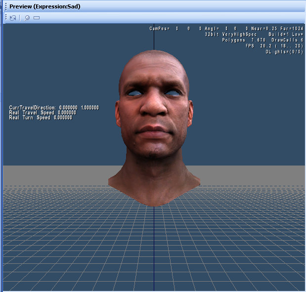
В окне предварительного просмотра отображается персонаж, на котором можно предварительно просмотреть выбранные выражения и анимацию.
Он может отображать любую модель, поддерживаемую движком, как long, поскольку либо основная сетка, либо вложение содержит хотя бы одну цель морфинга. Файл, который отображается в данный момент, отображается в тексте заголовка панели.
Показанную модель можно изменить с помощью опции [LINK]. Различные параметры предварительного просмотра можно изменить с помощью панели параметров предварительного просмотра.
3. Панель видеокадра
Эта панель устарела и не имеет функциональности. В будущем оно будет удалено.
4. Панель параметров предварительного просмотра
Эта панель предоставляет параметры для управления тем, что отображается на панели предварительного просмотра. Многие из этих параметров такие же, как и в редакторе символов.
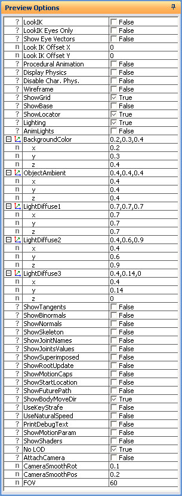
Вариант | Описание |
|---|---|
LookIK | Заставляет модель смотреть в сторону камеры, используя вместе позвоночник, шею, голову и глазные кости. |
LookIK Только глаза | Если LookIK включено, перемещайте только глаза. |
Показать векторы глаз | Показывает линии, указывающие в направлении костей глаз; используется для отладки |
Посмотрите IK Смещение X | Определяет смещение цели LookIK по оси X относительно центра камеры. |
Посмотрите IK Смещение Y | Определяет смещение цели LookIK по оси Y относительно центра камеры. |
Процедурная анимация | Включает процедурную анимацию глаз и век для автоматического подергивания и моргания. |
Отображение физики | Рисует физические сетки модели. |
Показать сетку | Переключает отображение сетки вдоль плоскости z=0. |
Освещение | Переключает освещение модели. |
AnimLights | Переключает положение источника света static и вращающихся источников света в сцене. |
Цвет фона | Изменяет цвет фона, используя значения RGB. |
Объект Эмбиент | Выбирает окружающее освещение для модели. |
Свет Рассеянный1 | Изменяет рассеянный цвет источника света 1, используя значения RGB. |
Свет Диффузный2 | Изменяет диффузный цвет источника света 2, используя значения RGB. |
Свет Диффузный3 | Изменяет рассеянный цвет источника света 3, используя значения RGB. |
Показать каркас1 | Показывает модель в виде каркаса |
Показать каркас 2 | Показывает модель в виде каркаса |
Показать касательные | Отображает линии вдоль касательных к каждой вершине сетки. |
Показать бинормали | Отображает линии вдоль бинормалей каждой вершины сетки. |
Показать нормали | Отображает линии вдоль нормалей каждой вершины сетки. |
Показать скелет | Отображает подлежащие кости |
Показать имена соединений | Показывает отладочную информацию для костей. |
Показать значения соединений | Показывает отладочную информацию для костей. |
Показать шейдеры | Отображает используемые в данный момент шейдеры |
FOV | Устанавливает поле обзора (можно использовать для увеличения) |
(1) Процедурную анимацию также необходимо включить с помощью консольной команды ca_face_procedural=1 (или 2 или выше).
5. Ползунок «Эффекторы»
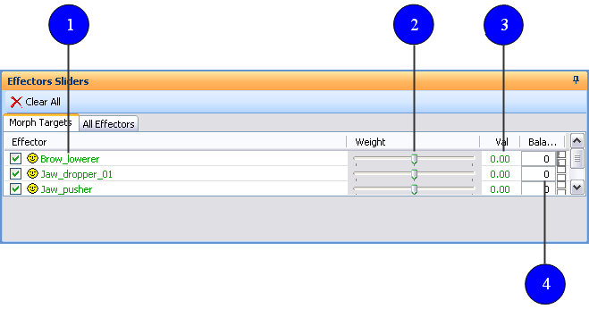
На этой панели отображается список выражений в текущей библиотеке и имеется ползунок для каждого из них. Манипулирование этим ползунком позволяет предварительно просмотреть выражение на панели предварительного просмотра. Можно одновременно манипулировать несколькими ползунками, и их эффекты будут суммироваться.
Панель «Слайдер эффектов» содержит две вкладки. Первый называется Морфирование целейи показывает только выражения, которые являются простыми целями морфинга. Вторая вкладка называется Все эффекторы и показывает все эффекторы в текущей библиотеке.
Выражение можно быстро создать из текущих позиций ползунка с помощью панели библиотеки эффектов. Это может быть эффективным способом создания новых составных выражений. Слева от каждого ползунка находится флажок, который включает/отключает предварительный просмотр этого эффектора. Отключение этого поля эквивалентно установке положения ползунка на 0. В крайнем правом углу каждого ползунка находится элемент управления для настройки баланса эффектора в окне предварительного просмотра.
Выражения можно перетащить из этой панели в панель обозревателя выражений, чтобы добавить подвыражения к составным выражениям или добавить выражение в папку. Чтобы быстро очистить все просматриваемые выражения, в верхней части панели есть кнопка под названием «Очистить все".
Главное меню панели слайдера «Эффекторы»
Очистить все | Очищает все примененные выражения |
Вкладка «Цели морфинга»
Перечисляет все доступные цели морфинга персонажа. Ползунки веса в этом представлении позволяют пользователю предварительно просмотреть каждый морф, перемещая ползунок влево (отрицательные значения) или вправо (положительные значения). Баланс позволяет асимметричный предварительный просмотр каждой формы или морфа.
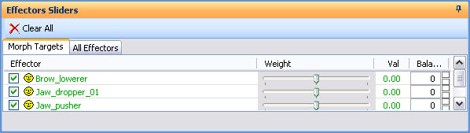
Эффектор | Отображает имена целей морфинга, хранящихся внутри персонажа; флажок рядом с названием морфа включает и отключает эффект ползунка веса. |
Вес | Перемещает цель морфинга из нейтрального положения в отрицательные или положительные значения. |
Вал | Отображает значение положения ползунка в числовой форме. |
Баланс | Управляет коэффициентом баланса или симметрией морфа. |
Вкладка «Все эффекты»
Аналогично предыдущей вкладке, но содержит список всех возможных эффекторов от морфов до выражений.
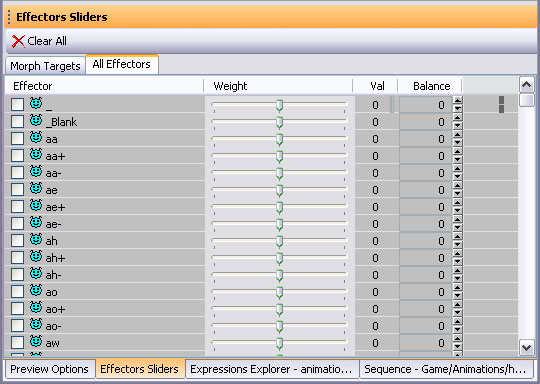
Эффектор | Отображает имена доступных эффекторов, от целей морфинга до составных выражений; флажок рядом с названием эффектора включает или отключает эффект ползунка веса. |
Вес | Перемещает эффектор из нейтрального положения в отрицательные или положительные значения. |
Вал | Отображает значение положения ползунка в числовой форме. |
Баланс | Управляет коэффициентом баланса или симметрией эффектора. |
6. Панель обозревателя выражений
Эта панель позволяет пользователю просматривать выражения в текущей библиотеке и редактировать их. Таким же образом можно создавать и удалять выражения.
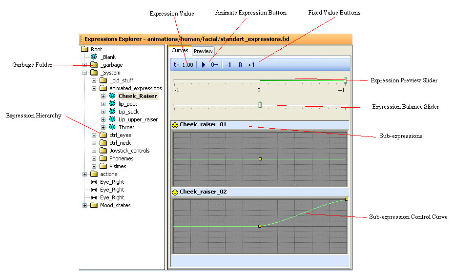
Панель состоит из двух половин. Левая половина – это Древовидное представление выражений, показывающий состав выражений в библиотеке. Выражения можно сгруппировать в папки для организационных целей. Подобно тому, как выражения отображаются как дочерние элементы папок в древовидном представлении, у выражений есть свои дочерние элементы — это подвыражения, составляющие составное выражение. Значок рядом с каждым элементом указывает тип выражения: составное или примитивное.
Функциональность
Когда выражение выбрано, его можно редактировать в правой половине панели. Элементы управления, доступные для редактирования этого выражения, зависят от его типа. Если выражение является целью морфинга, его нельзя редактировать. Это полностью определяется файлом ресурсов модели. Для выражения кости или прикрепления имеется поле редактирования для указания кости или прикрепления, которыми нужно манипулировать, а также ряд элементов управления для указания степени перемещения/поворота объекта для каждой оси. Углы указаны в градусах.
В случае составных выражений на панели отображается небольшое окно для каждого подвыражения, а также кривая, которая сопоставляет входное отображаемое значение с отображаемым значением для этого дочернего выражения. Эта кривая может быть как линейной, так и сплайновой. Если она линейная, единственный способ ее редактирования — изменить наклон линии. Это можно сделать, щелкнув правой кнопкой мыши и выбрав «Изменить вес».
Если кривая представляет собой сплайн, то ее можно редактировать с помощью мыши. Сплайн определяется путем размещения контрольных точек. Контрольная точка отображается на сплайне в виде небольшого квадрата. Эти точки можно перетаскивать левой кнопкой мыши. Двойной щелчок по точке удаляет ее; Щелчок double в любом месте кривой создает новую контрольную точку в этом положении.
Над элементами управления подвыражениями находятся два ползунка. Верхний используется для предварительного просмотра выражения путем установки отображаемого значения где-то между -1 и +1. Нижний ползунок используется для установки баланса выражения на панели предварительного просмотра.
Над ползунками находится панель инструментов. На этой панели инструментов отображается значение ползунка в виде числового значения. Существует кнопка воспроизведения, которая позволяет продолжить предварительный просмотр в режиме реального времени. Три кнопки справа можно использовать для установки минимального, максимального или нулевого значения предварительного просмотра.
Выражения можно перетаскивать из текущего положения в другое место в дереве. Это приведет к добавлению выражения в качестве дочернего элемента целевого выражения. Однако он также останется на прежнем месте - теперь в библиотеке на него будет дополнительная ссылка. Выражения также можно перетащить из этой панели на панель последовательности, чтобы добавить в последовательность новые каналы выражений.
Древовидное представление выражений
Перечисляет выражения, собранные в библиотеку выражений. В этом представлении пользователь может определить существующие морфы персонажа и скомпоновать их в выражения, используя интерфейс контекстного меню (ниже).
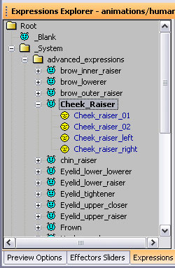 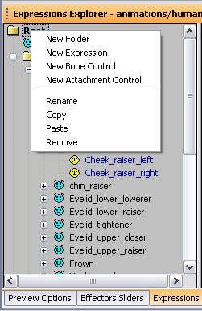
Древовидное представление выражений | Меню правой кнопки мыши |
|---|---|
Новая папка | Создает новую папку. |
Новое выражение | Добавляет существующий морф или создает новое выражение. |
Новый контроль костей | Создает новый контроллер костей или канал, с помощью которого можно анимировать кости персонажа. |
Новый контроль вложений | Создайте выражение, которое вращает вложение (не поддерживается для вложений обложки). |
Переименовать | Переименуйте выражение или папку. |
Копировать | Скопируйте выражение. |
Вставить | Вставьте выражение. |
Удалить | Удалить выражение или папку. |
Вкладка «Кривые»
Вкладка «Кривые» позволяет пользователю контролировать, как несколько фигур будут смешиваться при переходе выражения от минимальной амплитуды к полной амплитуде.
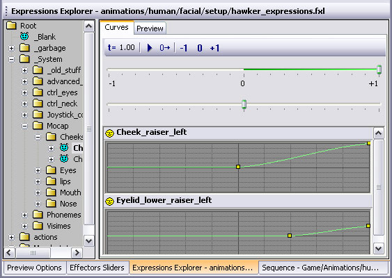
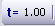
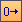
Ползунок предварительного просмотра выражений Верхний ползунок устанавливает выражение от -1,0 до 1,0. Я ONLY SEE 1 SLIDER, IS THAT CORRECT? IF NOT, WHERE CAN Я FIND BOTH?
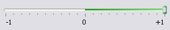
Ползунок баланса выражений Нижний ползунок устанавливает баланс от -1,0 до 1,0.
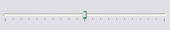
Сплайновое отображение
Определяет, как формы морфов смешиваются с течением времени, когда выражение (несколько морфов) переходит от минимальной амплитуды к полной амплитуде.
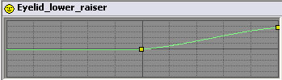
Вкладка «Предварительный просмотр»
Отображает предварительный просмотр загруженного в данный момент ресурса.
7. Панель последовательности
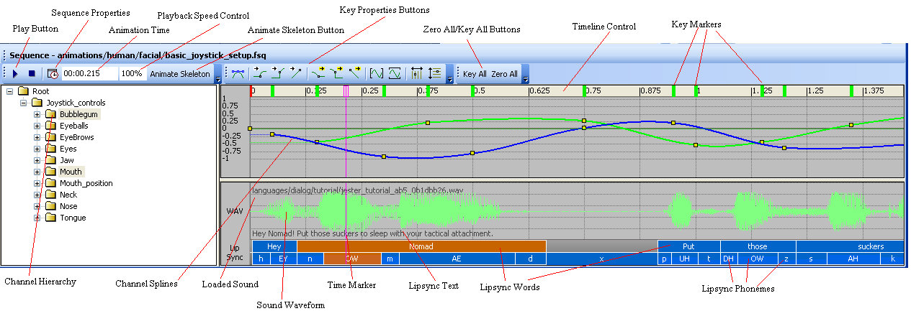
Эта панель используется для редактирования самой последовательности. Он разделен на четыре основных направления: Представление в виде дерева последовательностей, Кривая Track View, и Панели инструментов последовательного просмотра.
Панель последовательности отображает всю связанную информацию о последовательности, от выражений до звука и самих кривых/ключевых кадров.
Представление в виде дерева последовательностей
Левая часть представляет собой древовидное представление каналов в последовательности. Каналы отображаются сгруппированными в папки, что позволяет их логически организовать. Позволяет создать список доступных выражений, которые можно напрямую анимировать внутри последовательности. Они собираются путем добавления фигур и выражений из библиотеки выражений в древовидное представление.
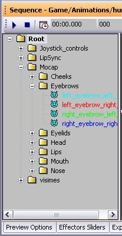 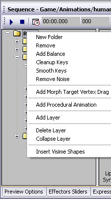
Последовательный просмотр | Меню правой кнопки мыши |
|---|---|
Новая папка | Создайте новую папку канала в эпизоде. Отображается диалоговое окно с запросом у пользователя имени создаваемой папки. |
Переименовать папку | Появляется только в том случае, если выбрана папка. Отображается диалоговое окно с запросом у пользователя нового имени папки. |
Удалить | Удалить элемент, например папку или выражение. |
Добавить баланс | Добавляет канал баланса в текущую папку. Этот канал будет контролировать баланс для всех выражений в той же папке, что и он, и во всех дочерних папках. |
Добавить выбранное выражение | Появляется только в том случае, если выражение сначала выбрано в области обозревателя выражений. |
Ключи очистки | Примените алгоритм оптимизации к ключевым кадрам кривых для этого канала. |
Гладкие клавиши | Функция сглаживания шума. В основном используется для данных mocap. |
Удалить шум | Функция удаления шума. В основном используется для данных mocap. |
Добавить силу фонемы | Добавьте канал, который контролирует амплитуду выражений фонем во время синхронизации губ. |
Добавить перетаскивание целевой вершины морфа | Не поддерживается. |
Добавить процедурную анимацию | Не поддерживается. |
Добавить слой | Добавляет слой редактирования на канал. См. Слои каналов для получения дополнительной информации. |
Удалить слой | Удаляет слой редактирования канала. См. Слои каналов для получения дополнительной информации. |
Свернуть слой | Зафиксировать изменения, внесенные внутри слоя, в базовые кривые навсегда. См. Слои каналов для получения дополнительной информации. |
Вставка фигур виземы | Режим, в котором морфы можно вводить в текстовой форме для создания перекрывающихся фигур, которые сливаются и исчезают друг с другом. |
Кривая трасса
Выбор канала в древовидном представлении приводит к тому, что его кривые отображаются в верхней части кривой (выбор папки эквивалентен рекурсивному выбору всех ее дочерних элементов). Этот элемент управления отображает сплайны, аналогично элементу управления подвыражением в области обозревателя выражений.
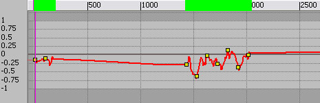
Функциональность непрямого маршрута
Здесь кривые можно редактировать с помощью мыши. Кривые управляются контрольными точками или клавишами, которые отображаются в виде маленьких квадратов. Их можно перетаскивать с помощью мыши. Двойной щелчок по клавише удаляет ее, а щелчок double в другом месте кривой создает новый ключ.
Несколько клавиш можно выбрать, щелкнув пустую часть элемента управления и перетащив ее, создав поле выбора. Удерживание кнопки управления позволяет добавлять ключи в текущий набор выбора. Если выбрано несколько клавиш, их можно перетаскивать одновременно.
Ключи можно скопировать, удерживая клавишу Control и перетаскивая их. При этом создается копия всех выбранных клавиш и начинается их перетаскивание.
Удерживая колесо мыши и перетаскивая, можно перетаскивать дисплей, позволяя нам просматривать различные части временной шкалы.
Масштаб отображения также можно изменить с помощью мыши. Прокрутка колеса мыши позволяет увеличивать или уменьшать масштаб текущей позиции. Удерживание клавиши Shift и колеса мыши и перетаскивание мыши влево или вправо сжимает или расширяет шкалу времени, а перетаскивание вверх и вниз сжимает ось значений. Фактически это позволяет масштабировать каждую ось независимо от другой.
Над кривыми находится управление временной шкалой. При этом значения времени отображаются вдоль оси времени. Нажатие на элемент управления временной шкалы устанавливает текущее время последовательности в эту позицию.
Он также отображает маркеры в каждой точке временной шкалы, где существует ключ для отображаемых в данный момент кривых. Эти маркеры можно перемещать и редактировать так же, как и клавиши, за исключением того, что это ограничивает перемещение по оси времени (т. е. вы не можете изменять значения клавиш), и каждый маркер одновременно управляет всеми клавишами в этой точке временной шкалы.
Маркеры также имеют цветовую маркировку в зависимости от количества клавиш в данный момент времени. Зеленый цвет указывает на то, что лишь немногие каналы в последовательности имеют клавиши в этом положении, а красный цвет указывает на обратное. Обратите внимание, что этот цвет определяется по отношению ко всем каналам в последовательности, а не только к видимым. Эта функция позволяет пользователю увидеть, является ли клавиша частью основной позы в последовательности или она относительно не связана с позициями других клавиш.
В нижней части панели отображается форма текущего звука, если он загружен. Это можно использовать, чтобы увидеть важные части звука и правильно согласовать движения.
В самом низу отображаются текущие фонемы. Обычно они генерируются путем извлечения их из загруженного звука (щелкнув правой кнопкой мыши по элементу управления волной). Однако как только это будет сделано, фонемы можно будет редактировать, чтобы улучшить общее качество.
Непрямой маршрут — панель клавиш (выделена красным ниже)
На панели клавиш отображаются любые клавиши на выбранном треке, которыми можно манипулировать так же, как и в основном виде кривой, но они привязаны к горизонтальной оси. Это полезно для масштабирования времени группы клавиш без случайного изменения амплитуды.
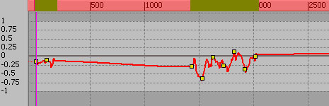
Непрямая трасса — Амплитуда (выделена красным ниже)
Амплитуда отображает весь диапазон, доступный для определенного выражения или управления джойстиком. Хотя в зависимости от реальных настроек диапазоны ниже нуля не обязательно будут иметь какой-либо эффект.
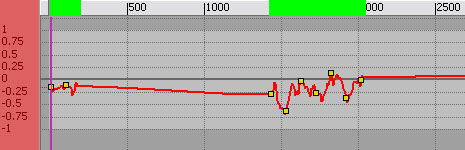
Непрямой маршрут — отображение непрямого маршрута (выделено красным ниже)
На дисплее кривой отображается как кривая выбранного трека, так и сами клавиши.
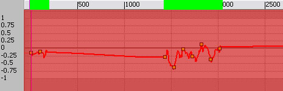
Аудио дорожка
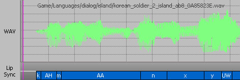
Аудиодорожка — меню правой кнопки мыши
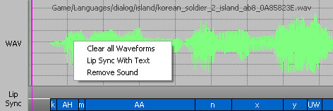
Очистить все сигналы | Удаляет все wav-формы с трека. |
Синхронизация губ с текстом | Открывает диалог, в который можно ввести текст, соответствующий произнесенному звуку, и создаст соответствующий список фонем. Если оставить это поле пустым, плагин сам угадает необходимые фонемы. |
Удалить звук | Удаляет wav-файл из звуковой дорожки. |
Аудио трек — панель меток (выделена красным ниже)
Обозначает части звуковой дорожки, синхронизируемые в формате WAV и Lip.
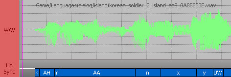
Аудиодорожка — панель синхронизации губ (выделена красным ниже)
На панели синхронизации губ отображаются морфы, которые были добавлены через список связанных записей или с помощью опции «синхронизация губ с текстом». Бар разделен на 2 секции. В верхней части хранятся слова, которые могли быть введены для управления процессом извлечения синхронизации губ, а в нижней половине показаны фонемы, которые использовались для создания извлеченной синхронизации губ.
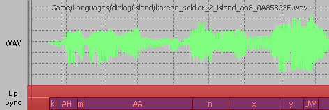
Аудиодорожка — Wav-отображение (выделено красным ниже)
Отображает WAV-файлы, добавленные в эпизод, в графической форме, а также имя файла и его расположение на диске.
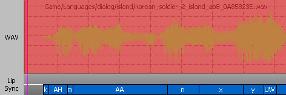
Панели инструментов последовательного просмотра
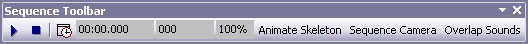
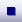
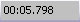
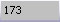
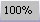
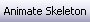
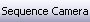
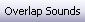
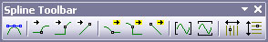
Ключевыми настройками касательной можно управлять с помощью кнопок панели инструментов ключевых настроек (см. изображение выше).
Есть семь кнопок, влияющих на касательные, каждая из которых влияет на выбранные в данный момент клавиши:
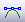
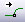
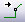
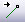
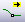
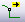
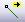
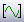
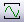
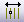
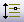
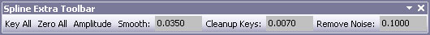
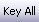
Слои каналов
При работе с кривыми, имеющими множество ключей, например с данными захвата движения, обычная анимация по ключевым кадрам становится очень громоздкой. Чтобы облегчить эту ситуацию, аниматоры могут использовать слои каналов.
Слой канала по сути замораживает все ключи в кривой и позволяет аниматору создать новый набор ключей. Эти новые ключи управляют новым сплайном, который добавляется к базовым данным. Благодаря этому аниматор может быстро и интуитивно смещать большое количество клавиш. Как только он закончит, слой можно свернуть, при этом слой будет удален, а все ключи будут обновлены для хранения новых значений.
8. Панель джойстиков
Джойстики — это определяемые пользователем 2D-контроллеры с одним манипулятором, которому можно назначить несколько морфов, выражений или других фигур, чтобы анимировать их графически — во многом аналогично перемещению физического джойстика.
На панели «Джойстик» пользователь может начать собирать джойстики и подключать их к морфам, выражениям или висемам, которые стали доступны в представлении последовательности.
Меню правого клика джойстика
Создать джойстик | Создает базовый джойстик без каких-либо активных подключений. |
Щелкните правой кнопкой мыши джойстиком (в древовидном представлении выражение не выбрано)
Изменить имя джойстика | Переименовывает джойстик. |
Установить цвет джойстика | Изменяет цвет джойстика. |
Удалить джойстик | Удаляет джойстик навсегда. |
Свойства джойстика | Просматривает страницу свойств джойстика. |
Щелкните правой кнопкой мыши джойстиком (выражение, выбранное в древовидном представлении)
Изменить имя джойстика | Переименовывает джойстик. |
Установить цвет джойстика | Изменяет цвет джойстика. |
Установить горизонтальный канал джойстика | Назначает выбранное выражение в виде дерева горизонтальному каналу управления джойстиком. |
Установить вертикальный канал джойстика | Назначает выбранное выражение в виде дерева вертикальному каналу управления джойстиком. |
Перевернуть вертикальный канал | Инвертирует управление вертикальной осью. |
Перевернуть горизонтальный канал | Инвертирует управление горизонтальной осью. |
Удалить джойстик | Удаляет джойстик навсегда. |
Свойства джойстика | Просматривает страницу свойств джойстика. |
Свойства джойстика
Каналы
X-канал | отображает выражение, назначенное каналу X. |
Y-канал | отображает выражение, назначенное каналу Y. |
Перевернутый флажок | Инвертирует канал X или Y. |
Настройки импорта видео
X-шкала | Масштабирует компонент X при импорте. |
Масштаб Y | Масштабирует компонент Y при импорте. |
Смещение | Смещает компонент X или Y при импорте. |